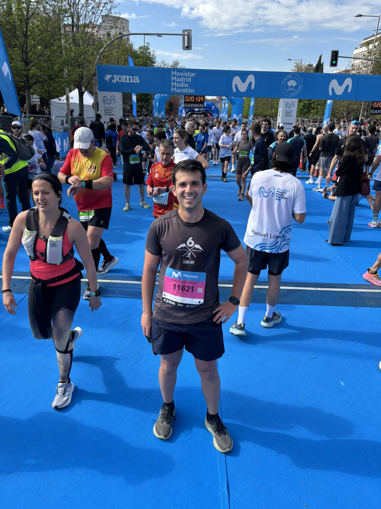

30 de septiembre de 2025
Mi último viaje de 2025 fue a un lugar mucho más próximo: Madrid. En este viaje, tenía un objetivo claramente definido: correr mi primera media maratón. Después de unos meses intensos de preparación, me enorgullezco de decir que pude completar la carrera satisfactoriamente y, de paso, disfrutar del gran landscape que tiene Madrid.